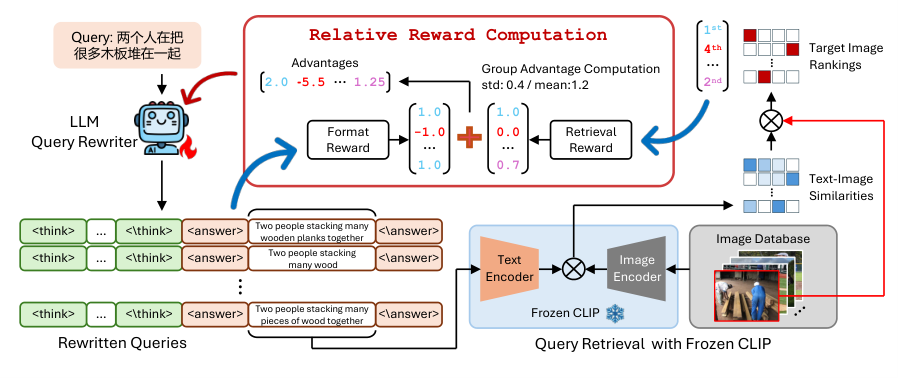
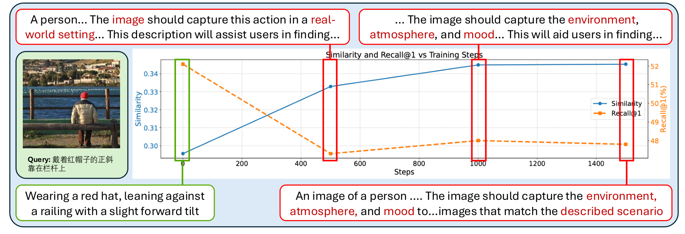

SHARE
CLIP-style retrievers drop sharply on Chinese queries, long-text queries or image-plus-text queries. Retraining the retriever and re-embedding the whole corpus is expensive. This paper leaves the retriever alone and trains only an LLM that rewrites the query, using GRPO with the retrieval rank as the reward. The authors find that if the reward only measures how similar the rewritten query is to the correct result, the model learns to raise the scores of all candidates together, irrelevant ones included. Rewarding the rank of the correct result in the whole corpus makes this problem disappear. Across five benchmarks covering multilingual, long-text and composed image retrieval, Recall@10 is on average 4.9 points higher than an untrained LLM rewriter, and on two benchmarks the 3B rewriter even beats using GPT-5.4 as the rewriter.
Retrieval teams should read this mainly because it states clearly what a rewriter should learn: reward the rank, not the score. A higher score does not mean a higher rank, and this shows up in any training that uses retrieval results as the reward, not just image search. The evidence is fairly solid: gains on all three CLIP sizes and all five benchmarks, plus a training curve showing that with a similarity reward the score keeps rising while Recall@1 keeps falling. The price is that every query in production first goes through a 3B model, and you have to measure that latency yourself.
What problem does it solve?
CLIP is trained on short English captions, and once queries look different its quality falls fast. The paper covers three common shifts, illustrated here with a photo-library search (illustrative):
| User input | Shift | What happens if fed straight to CLIP |
|---|---|---|
| "The pitcher is throwing the ball" (in Chinese) | Language | English CLIP cannot read Chinese, and multilingual versions often miss entities like "pitcher" |
| A Wikipedia entry of 600+ words | Length | The text encoder reads only the first 77 tokens, and key details are often cut off |
| A photo of a red dress + "make it blue, short-sleeved" | Modality | CLIP does not take mixed image-text input, so it must first become text |
There are usually two fixes. One is to add training data and fine-tune the retriever. That means re-embedding the whole corpus and replacing the deployed model, at high cost. The other is to put an LLM in front of the retriever to rewrite queries into something CLIP is used to, such as translating into English or compressing into a short caption. The second is cheap, but the LLM does not know what input CLIP likes: what it writes reads well to people but may land in the wrong place in CLIP's embedding space. As the numbers below show, on long Wikipedia text a plain LLM rewrite actually lowers Recall@10 compared with the raw query.
The paper's method GRAPE takes the second route and fills in the missing piece: the frozen retriever tells the LLM which rewrites actually pushed the correct result to the top.
Overall pipeline

| Step | What happens | What changes |
|---|---|---|
| 1. Sample rewrites | The rewriter (Qwen2.5-3B-Instruct; Qwen2-VL-7B for composed retrieval) produces K rewrites of the same query, K=8 by default | Rewriter |
| 2. Format check | Reasoning must sit in think tags and the final rewrite in answer tags; wrong format gets -1 and skips retrieval | Nothing |
| 3. Retrieval | Each rewrite is encoded by the CLIP text encoder and compared with precomputed image embeddings to get the rank of the correct image | CLIP frozen |
| 4. Rank reward | Rank 1 gets 1, last place gets -1, linear in between | Nothing |
| 5. Group comparison | Each rewrite's total reward minus the group mean, divided by the group standard deviation, is its advantage | Nothing |
| 6. Update | The rewriter is updated weighted by advantage, with a KL term keeping it close to the original model | Rewriter |
Training runs only 1,500 to 2,500 steps with learning rate 5e-7 and batch size 8. Both CLIP encoders and the corpus embeddings stay fixed throughout, so the trained rewriter can be dropped in front of an existing retrieval system.
Key mechanism: why the reward should be the rank
The most direct reward is similarity: the closer the rewritten query is to the correct image, the higher the reward. The paper finds that this goes wrong, and calls the effect "score inflation".
A concrete example (illustrative). The corpus has 1,000 images and the query is "a boy flying a kite at the beach". The rewriter tries two versions:
| Rewrite | Similarity to correct image | Mean similarity to other images | Rank of correct image | Similarity reward | Rank reward |
|---|---|---|---|---|---|
| A: "boy, beach, kite, blue sky" | 0.31 | 0.18 | 3 | 0.31 | 0.996 |
| B: A plus "real-world environment, atmosphere" | 0.34 | 0.27 | 40 | 0.34 | 0.922 |
Rewrite B adds a few catch-all words. It becomes more similar to the correct image, but also to every other image, and the correct image drops to rank 40. The similarity reward prefers B, the rank reward prefers A. Trained on similarity, the model would keep stuffing such words into queries.
The appendix gives an intuitive explanation. Each image embedding can be split into a part shared by the whole corpus, the "average image", plus a part unique to that image. Query-image similarity then splits into two terms: similarity to the average image, plus similarity to the unique part. The first term is the same for every image. A similarity reward encourages making the first term large, which is easy but useless for telling images apart. Rank depends only on how much higher the correct image scores than the others, so the first term cancels and the model has to capture features unique to the correct image.
The rank reward is simple: 1 when the correct image is first, -1 when it is last, linear in between. This means every step up in rank changes the reward, so the model gets feedback even when it moves the correct result up by a single place.
One easily missed detail: GRPO already standardizes within the group. The appendix shows that as long as the reward is a linear function of rank, the standardized advantage depends only on the relative order of the 8 rewrites, not on which linear mapping is used. Another benefit is numerical stability. Late in training the 8 rewrites are often close, with similarities crowded between 0.30 and 0.31, and dividing by a near-zero standard deviation amplifies noise. Rank is discrete, so any difference in order gives a clear signal.

Figure 5 measures this. With a similarity reward on Flickr30k-CN, mean similarity rises steadily while Recall@1 falls, and rewrites start to include words like "real-world environment" and "atmosphere and mood". With the rank reward, recall rises steadily.
Results
The five benchmarks map to the three shifts: Flickr30k-CN and CVLUE (a Chinese vision-language benchmark) are Chinese text-to-image retrieval, XM3600 (Google's 36-language image caption set) is multilingual, Wikipedia is long text, and CIRR (a composed image retrieval dataset) is "reference image + modification text". Results for CLIP ViT-B/16 (Recall@1 / Recall@10, %); a dash means CLIP cannot take that input directly:
| Benchmark | Raw CLIP | LLM rewrite | GRAPE | GRAPE vs. LLM rewrite |
|---|---|---|---|---|
| Flickr30k-CN (Chinese) | — | 52.1 / 86.0 | 58.0 / 90.0 | +5.9 / +4.0 |
| CVLUE (Chinese) | — | 12.1 / 42.0 | 14.6 / 48.7 | +2.5 / +6.7 |
| XM3600 (multilingual) | 12.3 / 26.8 | 52.9 / 78.9 | 58.4 / 83.1 | +5.5 / +4.2 |
| Wikipedia (long text) | 33.5 / 71.9 | 34.3 / 69.3 | 43.7 / 82.8 | +9.4 / +13.5 |
| CIRR (composed) | — | 30.7 / 73.3 | 35.7 / 77.8 | +5.0 / +4.5 |
| Average | 22.9 / 49.4 | 36.4 / 69.9 | 42.1 / 76.5 | +5.7 / +6.6 |
The biggest gain in this table is on long text: a plain LLM rewrite lowers Wikipedia Recall@10 by 2.6 points versus the raw query, while GRAPE raises it by 10.9 points. When the LLM does not know what CLIP likes, rewriting can even hurt.
The conclusion holds across retriever sizes: on the largest ViT-L/14, average Recall@10 still rises from 71.9 to 76.8, so rewriting stays useful as the retriever gets stronger. CVLUE is the counterexample, with Recall@1 at only 14.6%: rewriting narrows the language gap but cannot rescue images the retriever itself cannot tell apart.
A control experiment on long text is persuasive. One might ask whether GRAPE just writes shorter queries. The authors prompted the LLM to compress as much as possible, reaching 35.7 words on average, even shorter than GRAPE's 45:
| Method | Avg. words | Recall@1 / Recall@10 |
|---|---|---|
| Raw query | 533 | 33.5 / 71.9 |
| LLM rewrite | 91 | 34.3 / 69.3 |
| LLM forced compression | 35.7 | 34.8 / 73.7 |
| GRAPE | 45 | 43.7 / 82.8 |
Shortening alone adds about 1 point. GRAPE's extra 9 points come from learning which words to keep: visible entities, colors and actions rather than background.
Against larger off-the-shelf models with the same prompts, GRAPE beats GPT-5.4 on both Flickr-CN and Wikipedia, and beats Claude-Sonnet-4.6 on Recall@1 while trailing it slightly on Flickr-CN Recall@10. On Wikipedia the gap is large: 43.7 Recall@1 for GRAPE versus 38.4 for GPT-5.4. This means a 3B model trained to the retriever's taste is more useful than a larger model that does not know it.
Training data need not be large: Flickr30k-CN with about 10,000 queries (a tenth of the full set) reaches 94% of full-data Recall@1, so a few thousand to ten thousand queries with known answers are enough to start.
Group size K matters little: going from 2 to 8 changes Flickr30k-CN Recall@1 by only 0.9 points, because the rank reward is discrete and any difference in order within the group gives a signal.
Limitations as I see them
First, production latency is not quantified. Every query has the 3B model generate reasoning and a rewrite, and the reasoning in the think tags has no length limit. For photo-library search that tolerates a few hundred milliseconds this is fine, but for a search box that must answer in tens of milliseconds this step may be an order of magnitude slower than retrieval itself. The authors acknowledge this in the discussion and mention distilling into a smaller model, without numbers.
Second, training needs a known correct result for every query. All five benchmarks pair one caption with one image, so the rank reward is easy to compute. In real systems a query often has several relevant results, or only noisy labels such as click logs; how to define the reward and whether the model will exploit the noise are outside what the paper tests.
Third, the ceiling is set by the retriever. On CVLUE GRAPE raises Recall@1 from 12.1% to 14.6%, 2.5 points, but the absolute level stays low. Rewriting can only move the query into a region the retriever knows; two images the retriever cannot separate stay inseparable. The 36-language results in the appendix also show limited gains on low-resource languages, because the rewriter itself does not know them well.
How a retrieval team could try it
- First confirm the problem is on the query side: sample failed production queries and see whether they cluster in one shift, such as long text, foreign languages or mixed image-text; if failures are spread across all kinds of queries, the retriever itself is more likely the issue.
- Run zero-shot rewriting with an off-the-shelf LLM and measure Recall@10. This sets the starting point and is the baseline for later comparisons.
- Prepare a few thousand to ten thousand queries with known correct results; by the paper's data, that already captures most of the gain. Use the frozen production retriever to compute the rank for each rewrite, and reward rank, not similarity.
- During training watch two curves together: mean similarity of the correct result and Recall@1. If the first rises while the second falls, that is score inflation and the reward design is wrong.
- Measure end-to-end latency before launch. If rewriting is too slow, first rewrite only queries that hit a known shift, or drop the reasoning and keep only the final rewrite.
Bottom line
When training a rewriter on retrieval results, reward the rank of the correct result, not how high its score is: catch-all words can raise every score at once, but they cannot raise the rank.
| Dimension | Verdict |
|---|---|
| Problem importance | High. Systems with a frozen retriever and a huge corpus are common, and changing the query is the cheapest entry point |
| Novelty | Medium. Training a rewriter with GRPO is not new; switching the reward from score to rank and explaining why is the main contribution |
| Evidence | Medium-high. Consistent gains over three retrievers and five benchmarks, with score-inflation curves and a forced-compression control |
| Engineering cost | Medium. Training takes only a few thousand steps, but every production query adds an LLM call |
| Worth trying | Yes, especially for retrieval systems with many long-text or cross-language queries; validate on a small dataset first |
How did this read for you?
Hoot made a note. Thanks for the feedback.
One tap, no sign-in; tap again to undo. Only anonymous counts are kept, never who you are.
Discussion
Add experiment details, reproduction notes or a different take. Requires a GitHub sign-in.
Loading the discussion…